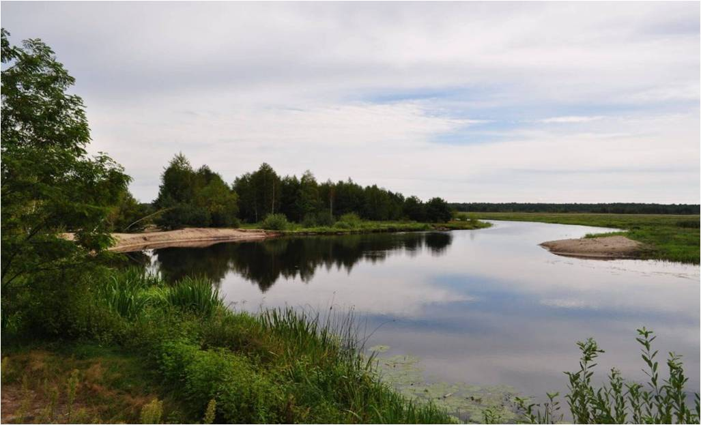
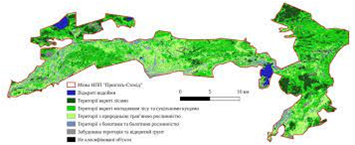
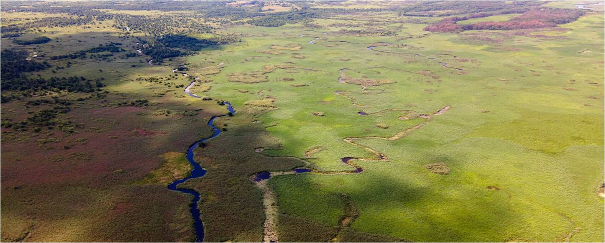
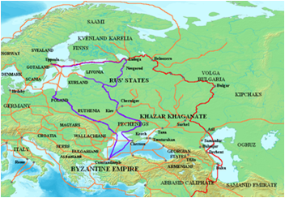
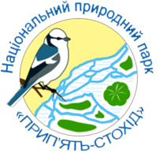
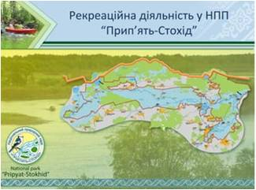
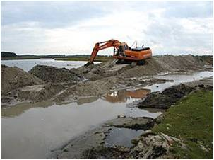

Історія
1980-х роках на території Любешівського району була створена низказаказників. У 1995 році створений регіональний ландшафтний парк «Прип'ять - Стохід», який об'єднав частину даних територій.13 серпня2007року створений Національний природний парк «Прип'ять - Стохід», який об'єднав усі заповідні об'єкти Любешівського район

Ресурси парку
Загальна площа парку становить 39315,5 га, в тому числі 5961,93 га земель, що надаються йому в постійне користування. Північна межа парку проходить по кордону із республікою Білорусь. Земелі парку становлять:
- болота— 43 %
- ліси— 35 %
- чагарники— 16%
- водний фонд— 6 %

Фізико-географічні умови
Рельєф Парку низовинний та плоский із переважанням акумулятивних поверхонь, клімат - помірно-континентальний з м'якою та вологою зимою і нежарким, із незначними опадами літом. В заплавах Прип'яті та Стоходу переважають лучно-болотні й болотні ґрунти, в пониженнях надзаплавних терас - торфово-болотні й торфовимі, в межах моренно-зандрових рівнинних межиріч - дерново-слабкопідзолисті й дерново-піщані. Територія парку значно заболочена та має високий показник густоти річкової сітки. Русла найбільших річок – Прип'яті і Стоходу розгалужуються на численні «рукави», лабіринти, із заболоченими та піщаними островами.

Історичне значення
Національний природний парк «Прип'ять—Стохід» багатий також на історико-культурну спадщину. Згідно з археологічними знахідками перші поселення людини з'явились тут 20 тисяч років тому — в епоху пізньої кам'яної доби. Знаходили також поселення епохи мезоліту, мідно-кам'яної доби, бронзи, заліза. Через цю територію в давні часи проходив водний торговий шлях «Із варяг у греки».
Найвизначнішими історико-культурними спорудами, які збереглися до нашого часу на території НПП «Прип'ять-Стохід», є ворота садиби-замку (XVIII ст.), що були побудовані в стилі бароко; колегія піярів, у якій навчалися багато видатних людей, серед яких найвиразнішою постаттю є польський національний герой Тадеуш Костюшко; а також кляштор і костел капуцинів. Є велика кількість храмів, переважно православних. В одному з них було видіння Божої Матері.

Території природно-заповідного фонду у складі НПП «Прип'ять-Стохід»
Нерідко, оголошенню національного парку або заповідника передує створення одного або кількох об'єктів природно-заповідного фонду місцевого значення. В результаті, великий НПП фактично поглинає раніше створені ПЗФ. Проте їхній статус зазвичай зберігають.
До складу території національного природного парку «Прип'ять-Стохід» входять такі об'єкти ПЗФ України:
- Лісовий заказник місцевого значення «Дольський»
- Лісовий заказник місцевого значення «Білоозерський»
- Гідрологічний заказник місцевого значення «Рогізненський»
- Гідрологічний заказник місцевого значення «Цирський»
- Гідрологічний заказник місцевого значення «Великоглушанський»
- Гідрологічний заказник місцевого значення «Ветлівський»
- Гідрологічний заказник місцевого значення «Бірківський»
- Гідрологічний заказник місцевого значення «Прип'ятський-1»
- Гідрологічний заказник місцевого значення «Прип'ятський-2»
- Гідрологічний заказник місцевого значення «Прип'ятський-3»
- Гідрологічний заказник місцевого значення «Ямно»
- Гідрологічний заказник місцевого значення «Гірківський»
- Ботанічна пам'ятка природи місцевого значення «Група дубів-1»
- Ботанічна пам'ятка природи місцевого значення «Група дубів-2»
- Ботанічна пам'ятка природи місцевого значення «Ділянка лісу-1»
- Ботанічна пам'ятка природи місцевого значення «Ділянка лісу-2»

Освітньо-рекреаційне значення
На території парку діють туристичні маршрути: сільський зелений туризм і водні туристичні маршрути.

Будівництво у національному парку
У природоохоронній території національного парку (на річці Стохід) незважаючи на протести споруджена руйнівна для національного парку дамба.
